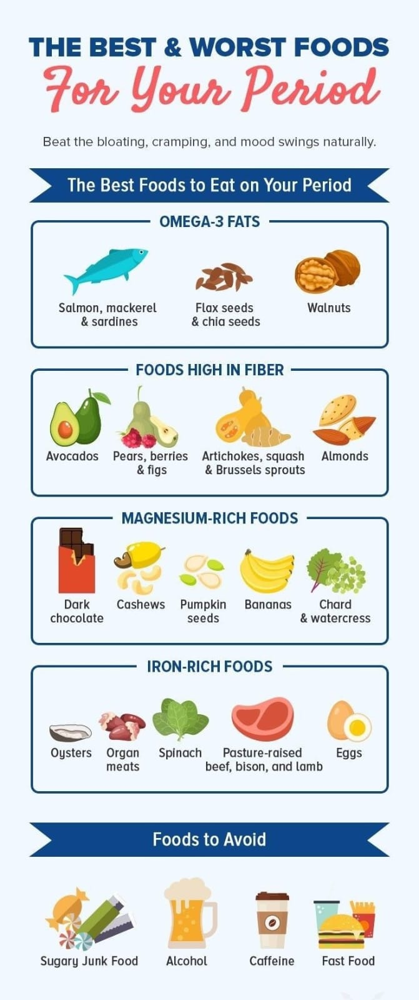

Food Recommendation for a Girl on Period
Foods to be Taken to Avoid Heavy Flow
Here are five iron-rich food supplements that we recommend to maintain RBC levels in your body:
1. Dark green leafy vegetables like amaranth leaves, parsley, radish leaves, and drumstick leaves are good sources of iron. You can either use them in a salad or make soup out of them. Within 10 to 15 days, you will see a major spike in the iron levels.
2. Dates, raisins (black), and dried apricot are loaded with iron, magnesium, and calcium that help you build a strong immune system.
3. Seeds such as sesame, garden cress, and sunflower are power-packed foods containing nutrients like iron, zinc, and folate that can help enhance hemoglobin levels.
4. Add whole cereals and millets such as amaranth seeds, and quinoa. Sprouted pulses like channa, lentils, and soybean are great sources of iron.
5. Add foods rich in vitamin C such as lime, capsicum, orange juice, and amla to enhance iron absorption in your body.
Foods to Avoid Irregular Periods
1. Ginger
Ginger is very beneficial for your health. From treating cold to improving digestion, ginger does it all! The vitamin C and magnesium content of ginger can help your uterus to contract, which in turn, starts your periods!
2. Unripe Papaya
You can regulate your periods by adding unripe papaya to your diet! Papaya helps in contracting the muscles in the uterus, which helps in releasing the blood and tissues from the vagina.
3. Cinnamon
Love the taste of cinnamon? That’s great! Cinnamon warms up the body from within, which increases the blood flow and helps make your cycles regular.
4. Aloe Vera
Aloe vera helps in controlling and managing your hormones, which regulates your periods. For best results, mix one teaspoon of honey with fresh aloe vera gel and have it every day before breakfast.
5. Turmeric
Turmeric has many medicinal properties and can be consumed to treat irregular periods. Take it with warm milk and honey before bed. It can also help with period cramps.
6. Pineapple
Pineapple contains an enzyme called bromelain, which helps shed the lining of the uterus and start your periods. This fruit also increases the production of red and white blood cells, aiding blood flow.
7. Parsley
Parsley is generally used as a garnish, but it can be an effective remedy for irregular periods! It increases blood flow inside the body and helps regulate period cycles. You can eat boiled parsley or have parsley tea every day for best results!